Super-Resolution can be defined as the area of study within machine learning that aims to enhance the quality of a given digital image by increasing its resolution. This is relevant because display resolution in TVs and phones has been going up, and there’s a lot of old multimedia content produced in lower resolutions.
Traditionally, image rescaling has been done utilising digital FIR filters such as box, triangle, Mitchell Netravali and Lanczos for nearest neighbour, bilinear, bicubic and windowed sinc scaling, respectively.
Convolutional Neural Networks have been eclipsing traditional methodologies in digital image processing, and several models have been proposed for the resolution upscaling problem such as SRCNN, FSRCNN, ESPCN and VSDR.
Traditional scaling filters such as Lanczos can interpolate existing information relatively well but they cannot recreate the lost high frequency components.
The absolute difference between an upscaled image and the ground truth is then defined as the residuals. Deep CNNs such as VDSR are designed to learn how to find residuals so they can be added back to the interpolation image in order to achieve a high-resolution recreation with higher fidelity than it would be otherwise possible. SRCNN, FSRCNN and ESPCN, on another hand, are designed to learn how to go from a low-resolution image to its high-resolution version directly, SRCNN utilises a bicubic interpolated image as its input, FSRCNN and ESPCN both receive the low-resolution image directly.
This study aims to not only review those networks but also propose a shallow CNN capable of achieving similar performance with shorter training time.
The simplest way of increasing the resolution of a digital image is to simply repeat its discrete values N^2 times for scaling factor N. This is called “Nearest Neighbour” and it is the cheapest algorithm you can implement computationally speaking. A single step further than that would be to interpolate existing values and create a straight line between them, do this for both axes and we have what we call “Bilinear” interpolation. If we want to increase the complexity again and draw more accurate curves, we can take more than 2 points into account and fit a polynomial curve into the existing discrete points, the most common techniques that do this are collectively called “Bicubic” interpolation.
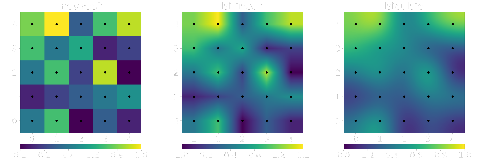
Using other FIR filters is possible, the Lanczos filter is a popular approximation of the sinc function, the difference is that Lanczos is a sinc windowed by the first lobe or a larger sinc. The optimal reconstruction filter for band-limited signals is proven to be the sinc filter, but as a filter of infinite duration we can’t use it directly in real discrete systems. For this reason, several approximations have been proposed and the Lanczos kernel is one of them.
Don P. Mitchell and Arun N. Netravali, came out with a paper, Reconstruction Filters in Computer Graphics [1], which formulated two variables known as “B” (as used for 'B-spline' curves) and “C” (as used for the 'Cardinal' curves). The authors then conducted a survey to find the optimal parameters for a bicubic filter, which resulted in the Mitchell Netravali filter with B = C = 1/3. The following image displays the result of the survey.
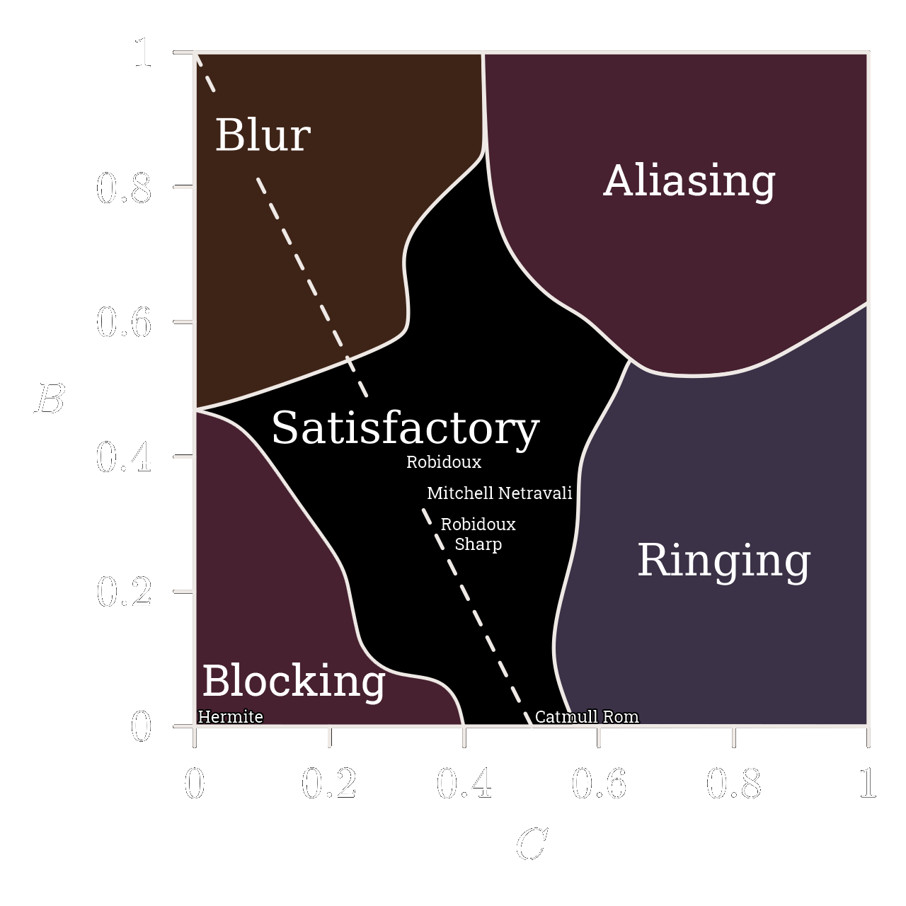
If we downsample the popular picture of the Swedish model Lena Forsén using the Mitchell Netravali filter and a scaling factor of 0.5x, and then upsample it back up using the same filter (scaling factor 2x), we can see that the resulting image is considerably blurrier than the original.
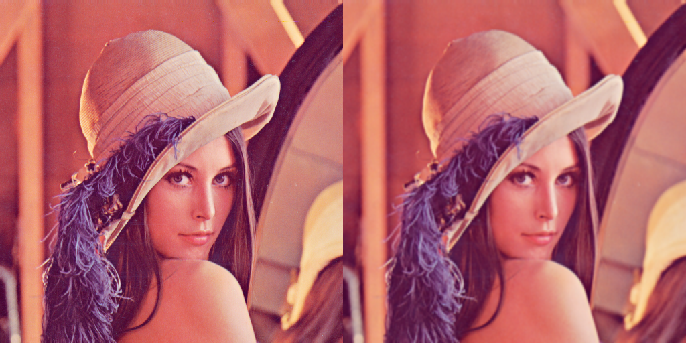
Alternatively, it’s easier to see the difference if we look at the absolute difference between the images magnified by a factor of 10.
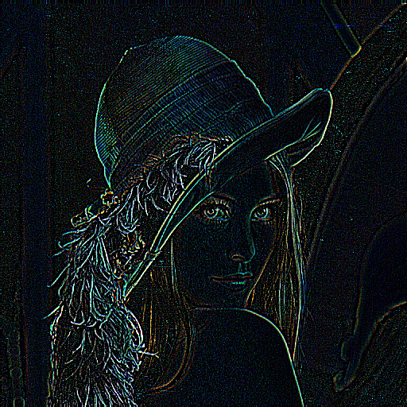
The difference between them, as explained before, is mostly contained in the high frequency components (the edges) that get lost when you downscale an image throwing away information. The act of upscaling can increase the number of pixels but we’re not creating new information, we’re merely interpolating already existing information to find new points in between the existing points in the low-resolution image. This phenomenon can also be observed in the frequency domain directly through the discrete Fourier transform, the following image displays the DFTs of both images side by side.
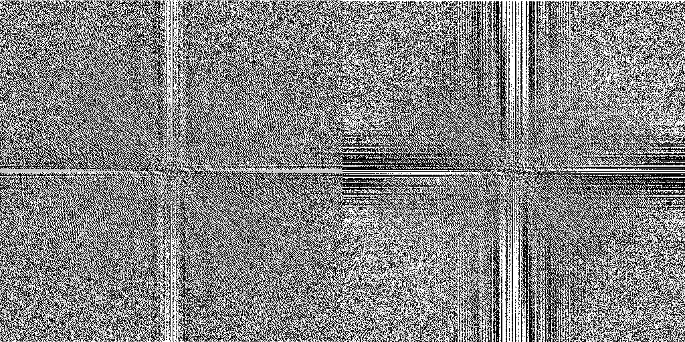
The human visual system has lower acuity for differences in colour than in luminance, this fact has motivated engineers to manipulate the data accordingly in order to save bandwidth and achieve reasonable quality at a fraction of the bitrate.
Chroma subsampling is the technique currently present in any modern video codec like H.265/HEVC, H.264/AVC, VP9 or AV1. Lossy still image codecs such as JPEG and WebP also implement chroma subsampling. The technique consists of literally having fewer samples for chromatic information, which is usually easier and more straightforward to do in the YCbCr channels.
The YCbCr family of colourspaces split the RGB data into a luminance channel (Y) and 2 chromatic channels (Cb and Cr). Video codecs almost always use the “4:2:0” scheme which simply means the chromatic channels are of a quarter of the full luma resolution.
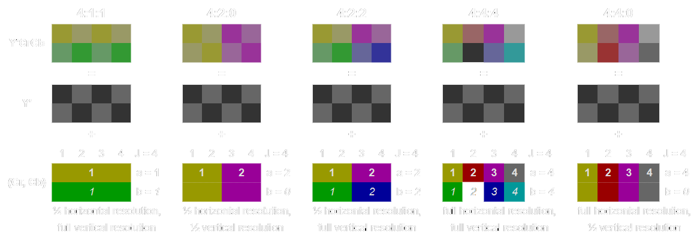
RGB Lena:
YCbCr Lena:
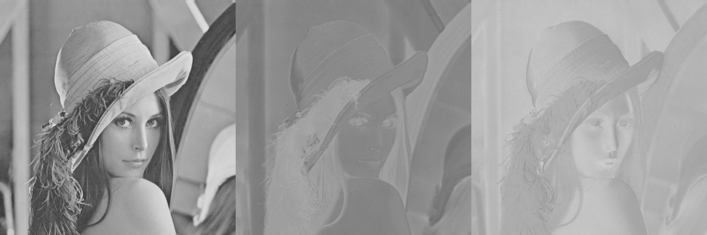
Understanding that the human visual system is more sensitive to luminance information is important because it allows us to focus solely on the luma plane when spending computational power trying to resample a given image accurately. For this reason, all networks described above only upsample the Luma frame, chromatic information is handled by the conventional FIR filters.
SRCNN [2] stands for Super-Resolution Convolutional Neural Network, and it’s one of the first works in this area. The model receives a bicubic interpolated image as its input, goes through a 9x9 convolutional layer with 64 filters called “feature extraction”, then through a 1x1 convolutional layer called “non-linear mapping” with 32 filters and then it attempts to reconstruct the high-resolution image with a final 5x5 convolution with a single filter.
Since attempting to reconstruct an image is essentially a regression task with multiple outputs, the mean-squared-error loss function was chosen.
The following images showcase the results obtained by the original authors.
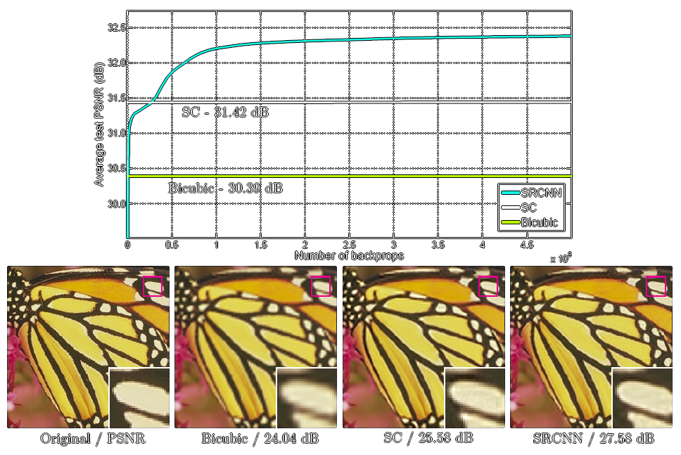
SRCNN achieved a PSNR (peak-signal to noise ratio) score of almost 4 dB higher than bicubic interpolation, what the neural network uses as its input, but this came after 12\bullet{10}^8 backpropagations and a training time of weeks to fine tune the layers [2].
FSRCNN [3] stands for Fast Super-Resolution Convolutional Neural Network, and it came as an attempt to make SRCNN faster through modifications to its structure. The major difference between the two is that FSRCNN receives the original low-resolution image as its input, introducing a transposed convolution at the end that increases the scale to the target resolution. The new network also replaces the larger filters by a series of smaller 3x3 convolutional layers that end up with the same receptive field but with fewer trainable weights [4].
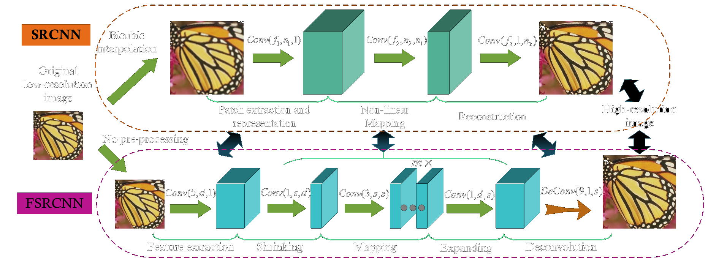
The interesting thing about the transposed convolution is that the scale factor simply becomes the stride of last layer, which means it’s possible to reuse the previous layers and only retrain the last one for a different scaling factor.
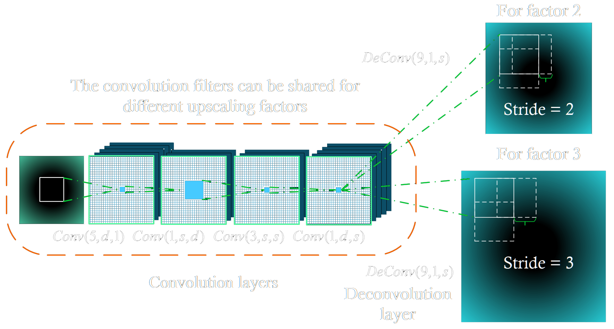
The new model achieves much better runtime performance when compared to SRCNN, the smaller dimension of the LR images coupled with the smaller 3x3 filters allow FSRCNN to be orders of magnitude faster [3]. When it comes to the output’s fidelity, the new model also achieves comparable or better image quality.
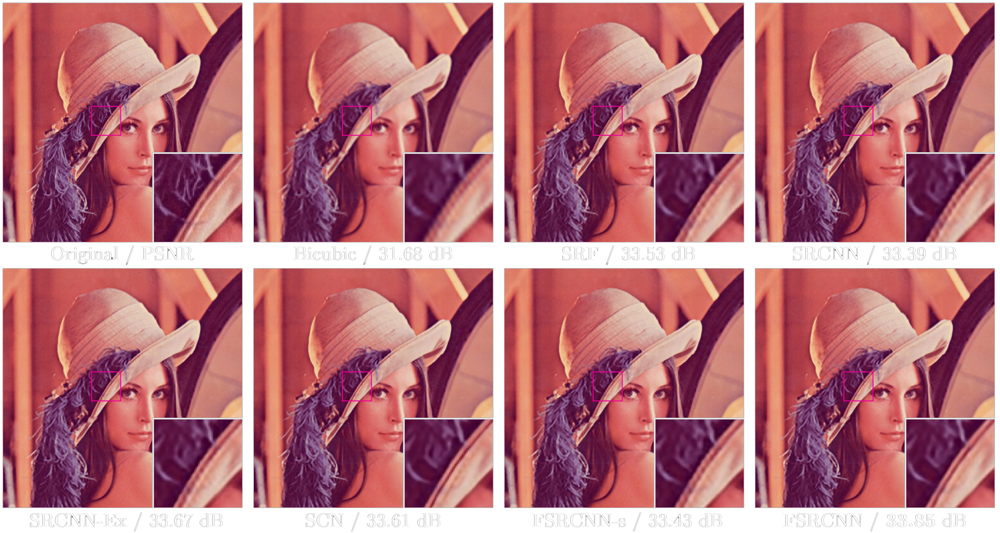
Despite offering better runtime performance, FSRCNN still requires considerable training time to fine-tune the final transposed convolution layer (the authors use a learning rate of 0.0001) [3].
ESPCN [5] stands for Efficient Sub-Pixel Convolutional Neural Network, and it came as a novel alternative to the transposed convolution layer introduced before. The key difference this time is that this network reconstructs the high-resolution image rearranging several channels into a single larger channel in a “depth-to-space” operation.
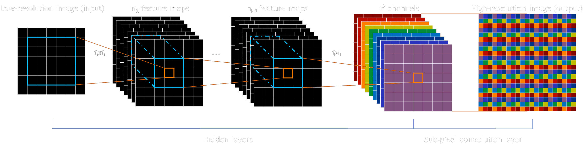
The advantage when compared to the transposed convolution used in FSRCNN is that the channels are generated separately before they’re reconstructed into a single image, which means the network is capable of learning more quickly since it has better control of the artifacts it’s producing in its output.
Both ESPCN and FSRCNN are orders of magnitude faster than SRCNN since they take low-resolution images as their inputs and employ several layers in series with smaller 3x3 kernels. Unfortunately, the authors also claim their training time took a week on a Nvidia K2 GPU with 91 images as a training set.
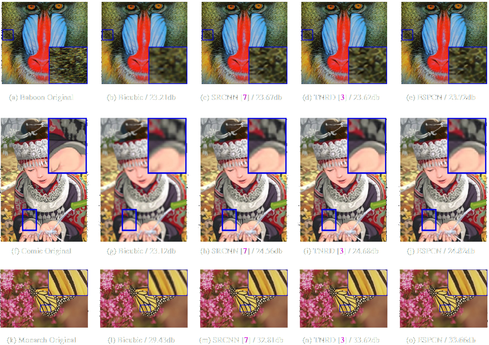
VDSR [6] stands for Very Deep Super-Resolution, and despite having “very deep” in its name this fact isn’t necessarily what differentiates it the most compared to the previous models. SRCNN, FSRCNN and ESPCN all get better with more layers, but the prohibitive factor was training time to achieve convergence on a deeper model. VDSR solves this issue by capitalising on the already existing knowledge of image processing, as explained before, the difference between an interpolated low-resolution image and a real high-resolution image is in the high frequency components and we can call it the residuals, so instead of attempting to recreate the high-resolution image entirely the network attempts to recreate said residuals [6].
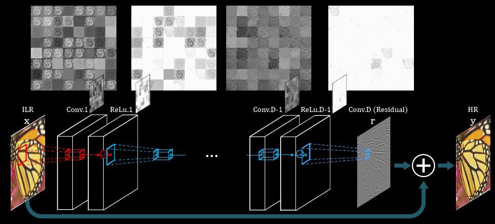
This simple yet effective fact is what allows VDSR to be trained in a much shorter period of time compared to the previous models. The authors claim training finished after only 4 hours on a Nvidia Titan Z, or 80 epochs (9960 iterations with batch size 64). This number is interesting because it proves brute forcing a problem is not always fruitful, the original SRCNN authors dismissed deeper networks for super-resolution due to the fact that they couldn’t get it to converge on a reasonable amount of time, resulting in weaker models with poor performance [2], [6].
VDSR is also the first network to include SSIM (structural similarity) metrics since the difference in PSNR scores might not give a clear picture on reconstruction quality.
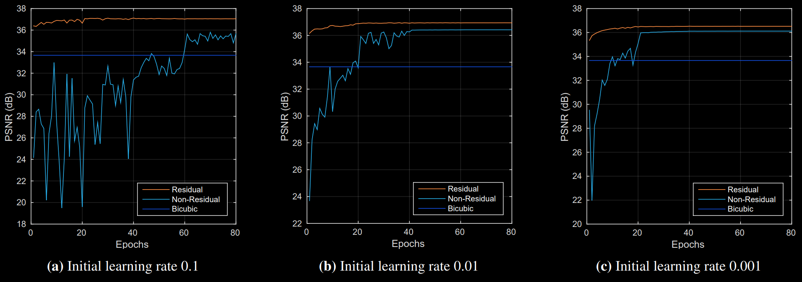
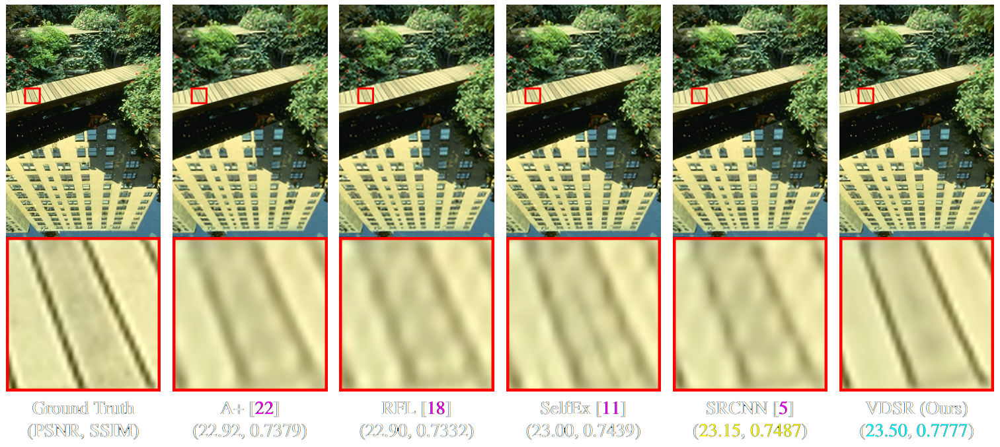
We can see that the lines and edges generated from the deeper VDSR network are of much better perceptual quality with fewer aliasing artifacts.
If we simply take VDSR’s model, reduce the number of filters per layer and make it less deep, we arrive at a model that, theoretically speaking, can be trained relatively quickly due to the intrinsic residual approach.
If we replace the interpolated input with a low-resolution input and introduce the “Sub-Pixel Convolution” layer (the depth-to-space operation from ESPCN [5]) at the end we can make it even faster due to the reduced dimensions throughout the network. ESPCN’s authors remind us through their paper that training time is still long for their network employing the “sub-pixel” convolution. But theirs generate the high-resolution prediction directly, the aim here is to evaluate whether we can make it converge more quickly if we make it generate the residuals instead.
Unlike the original VDSR, this model upsamples the input using the Lanczos filter due to its higher reconstruction fidelity when compared to bicubic filters. The images were previously downsampled using the Catmull-Rom filter, the sharpest key bicubic filter considered to be a good compromise by the Mitchell-Netravali survey. Lanczos was not chosen as the downsampling filter because bicubic interpolation is the “industry standard” when it comes to downsampling and experiments showed the difference was within the margin of error. The following table shows the mean PSNR scores for several FIR filters when upsampling the entire training set by a scaling factor of 2x.
The scaling factor 2x was chosen instead of 3x because the interpolated LR input image is closer in structure to the HR ground-truth, meaning that the residuals the network needs to learn are less complex, making convergence easier to achieve.
A SP-VDSR network with 5 convolutional layers of 8 3x3 filters each and a final “Sub-Pixel Convolutional” layer was then trained with 32 images of line-art drawings extracted from animated content. Line-art was chosen due to the lower high-frequency complexity compared to live-action images.
Training was done with 3600 epochs and batch size of 32. The Adam optimiser’s learning rate is set to drop progressively but the minimum value it can achieve is set to 0.0001. Leaky ReLU was used because residuals can have negative values and the change showed faster convergence. A canonical VDSR with the same depth was also trained for comparison purposes. The networks were trained for roughly an hour to show the advantage of using the depth-to-space operation to reduce the network’s dimensions allowing it to go through more epochs in the same period of time.
The modified network, which is a hybrid between VDSR [6] and ESPCN [5], was named “SP-VDSR” (Sub-Pixel-Very-Deep-Super-Resolution) and its architecture is described in the following image. The variant tested is shallow and only has 5 convolutional layers.
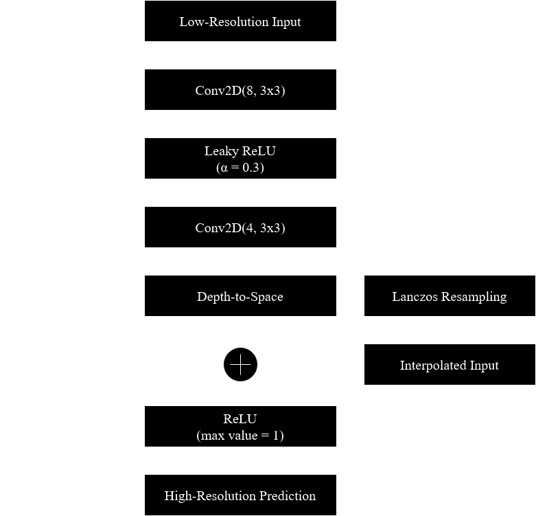
The network matched the Lanczos very quickly, apparently reaching a local minimum that lasted for approximately 200 epochs before it found a way to increase the quality again. The final average PSNR score was 44.86 dB after an hour. The network was also trained with bilinear and bicubic interpolation for comparison purposes, and we can see that despite the initial discrepancies all models converged to similar results. Feeding Lanczos interpolated images to the network resulted in a PSNR that’s 0.364 dB higher than doing the same with bilinear interpolated images.
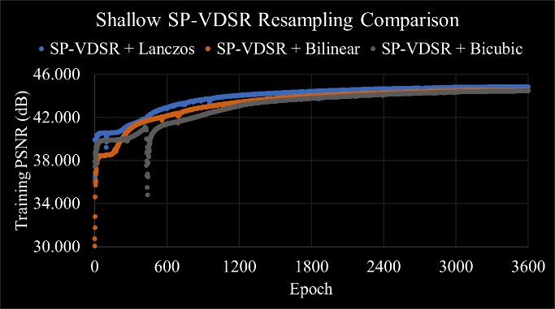
The quality results can then be shown in the figure below using a line-art test image. It’s easy to see the neural network learnt how to sharpen lines and make them look less blurry, achieving a PSNR score 3.68 dB higher than the Lanczos interpolated image it used as its input. Since the network is designed to only receive the luminance channel, chroma was upsampled by the same Lanczos filter before rearranging the YCbCr image into RGB.
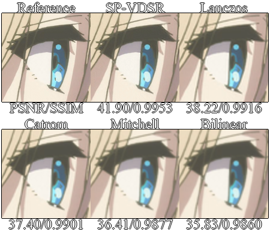
Direct comparisons with the other works are impossible due to hardware limitations. I do not have direct access to an Nvidia GPU to allow a model to be trained for longs periods of time with CUDA acceleration. Support for OpenCL is bad within the big machine learning so the chosen solution was to train the models on the Google Colab platform using their cloud GPUs and attempt to help the network’s performance with clever modifications.
The proposed model, SP-VDSR, displayed faster training epoch time and better quality for the same training time. Reducing the resolution of the convolutional layers to a quarter of their original size (for a 2x scaling factor) resulted in an epoch time of 1 second, going down from 3 seconds for the original VDSR model (which was trained for 1200 epochs to match the other network in training time, achieving 41.50 dB on the same training dataset).
A deep SP-VDSR can be explored so it can be more directly compared to the canonical VDSR in [6]. This study reinforces the idea that residual networks converge more quickly as claimed in [6], even when the depth-to-space “sub-pixel convolution” from [5] is used to upsample the residuals.
The loss function can also be modified, MSE is a good metric to find the absolute difference between the predicted image and the ground truth, but it does not give enough emphasis to the high frequency components the network is supposed to reconstruct [7], [8]. The gradient sensitive loss described in [7] is an interesting choice to be evaluated. This loss function extracts the edges from the images using the Sobel filter and then derives a mask to segment low-frequency and high-frequency information, which are then weighted to make the network give more emphasis to learning how to reconstruct the edges. Other studies, like [8], suggest using structural similarity indexes directly alongside MSE.
Generative adversarial networks, residual networks and attention-based networks aimed at the super-resolution problem have also emerged. RDN [9], ESRGAN [10] and RealSR [11] all achieve higher perceptual quality than conventional feed-forward CNNs, but those networks are deeper and more complex. Future works can explore how to accelerate GANs with the same techniques described in this article. A fast Super-Resolution network could also be implemented in hardware to upsample old multimedia content in real-time.
[1] ‘Reconstruction filters in computer-graphics | ACM SIGGRAPH Computer Graphics’. https://dl.acm.org/doi/10.1145/378456.378514 (accessed Dec. 14, 2020).
[2] C. Dong, C. C. Loy, K. He, and X. Tang, ‘Image Super-Resolution Using Deep Convolutional Networks’, Dec. 2014, Accessed: Dec. 15, 2020. [Online]. Available: https://arxiv.org/abs/1501.00092v3.
[3] C. Dong, C. C. Loy, and X. Tang, ‘Accelerating the Super-Resolution Convolutional Neural Network’, Aug. 2016, Accessed: Dec. 15, 2020. [Online]. Available: https://arxiv.org/abs/1608.00367v1.
[4] K. Simonyan and A. Zisserman, ‘Very Deep Convolutional Networks for Large-Scale Image Recognition’, Sep. 2014, Accessed: Dec. 15, 2020. [Online]. Available: https://arxiv.org/abs/1409.1556v6.
[5] W. Shi et al., ‘Real-Time Single Image and Video Super-Resolution Using an Efficient Sub-Pixel Convolutional Neural Network’, Sep. 2016, Accessed: Dec. 15, 2020. [Online]. Available: https://arxiv.org/abs/1609.05158v2.
[6] J. Kim, J. K. Lee, and K. M. Lee, ‘Accurate Image Super-Resolution Using Very Deep Convolutional Networks’, Nov. 2015, Accessed: Dec. 15, 2020. [Online]. Available: https://arxiv.org/abs/1511.04587v2.
[7] ‘[1809.07099] Dual Reconstruction Nets for Image Super-Resolution with Gradient Sensitive Loss’. https://arxiv.org/abs/1809.07099 (accessed Dec. 17, 2020).
[8] H. Zhao, O. Gallo, I. Frosio, and J. Kautz, ‘Loss Functions for Image Restoration With Neural Networks’, IEEE Trans. Comput. Imaging, vol. 3, no. 1, pp. 47–57, Mar. 2017, doi: 10.1109/TCI.2016.2644865.
[9] Y. Zhang, Y. Tian, Y. Kong, B. Zhong, and Y. Fu, ‘Residual Dense Network for Image Super-Resolution’, ArXiv180208797 Cs, Mar. 2018, Accessed: Dec. 19, 2020. [Online]. Available: http://arxiv.org/abs/1802.08797.
[10] X. Wang et al., ‘ESRGAN: Enhanced Super-Resolution Generative Adversarial Networks’, ArXiv180900219 Cs, Sep. 2018, Accessed: Dec. 17, 2020. [Online]. Available: http://arxiv.org/abs/1809.00219.
[11] X. Ji, Y. Cao, Y. Tai, C. Wang, J. Li, and F. Huang, ‘Real-World Super-Resolution via Kernel Estimation and Noise Injection’, 2020, pp. 466–467, Accessed: Dec. 16, 2020. [Online]. Available: https://openaccess.thecvf.com/content_CVPRW_2020/html/w31/Ji_Real-World_Super-Resolution_via_Kernel_Estimation_and_Noise_Injection_CVPRW_2020_paper.html.